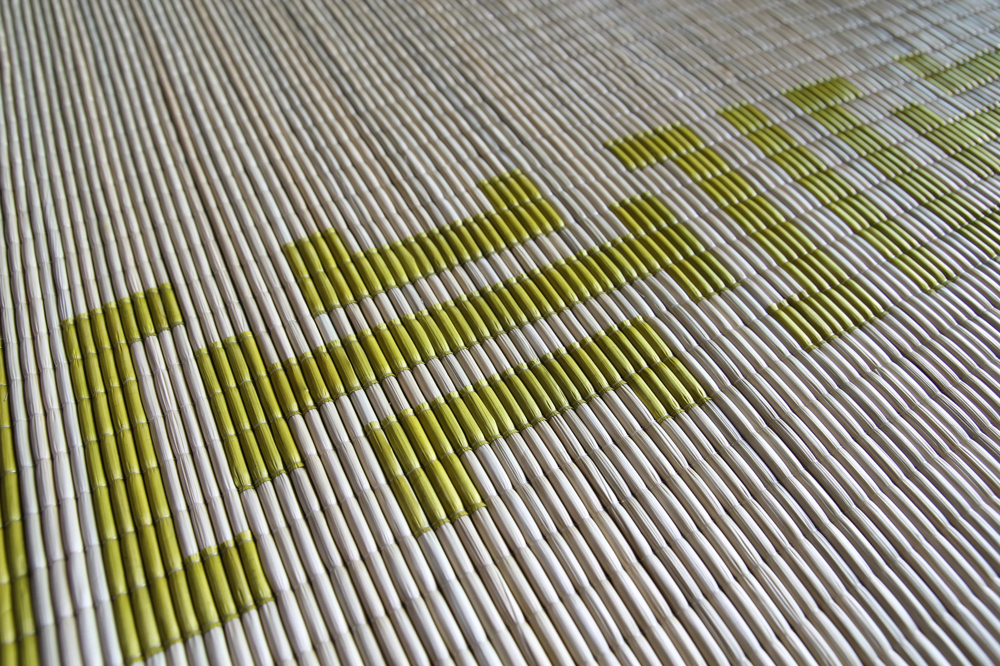
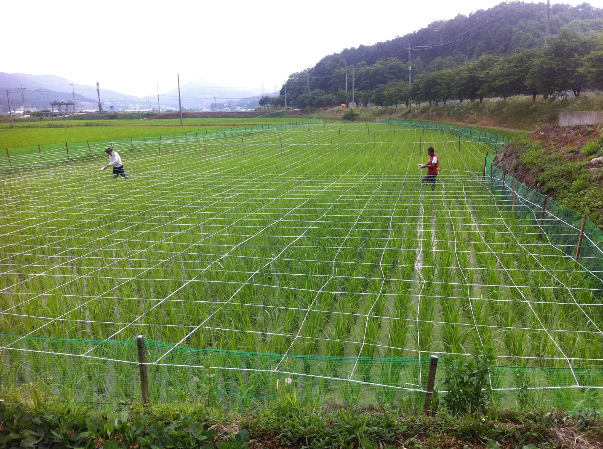
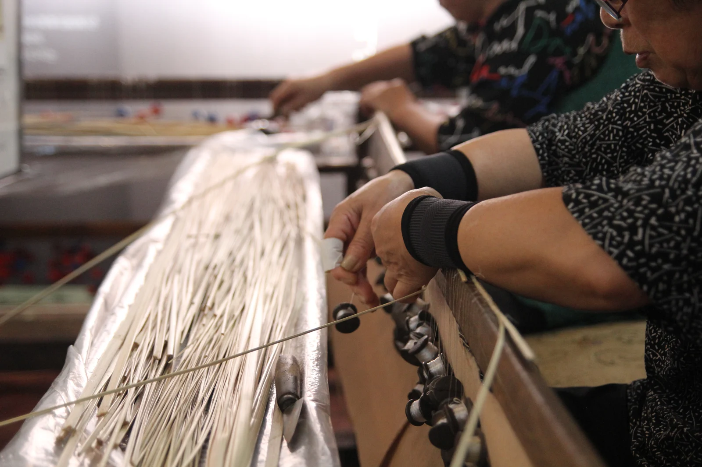
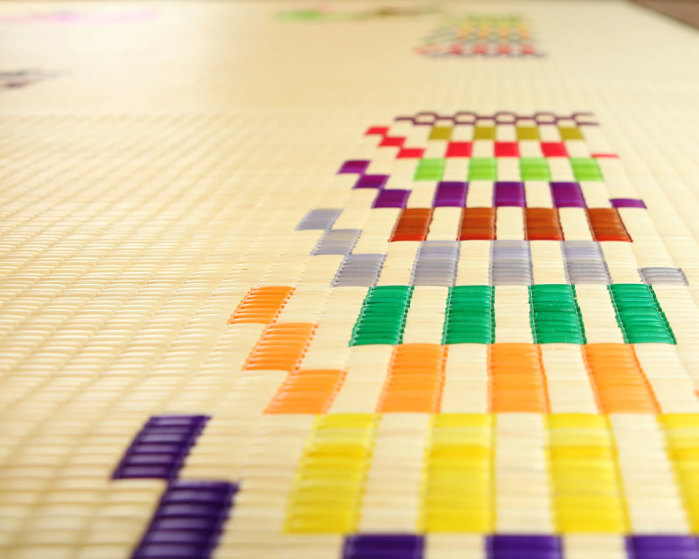
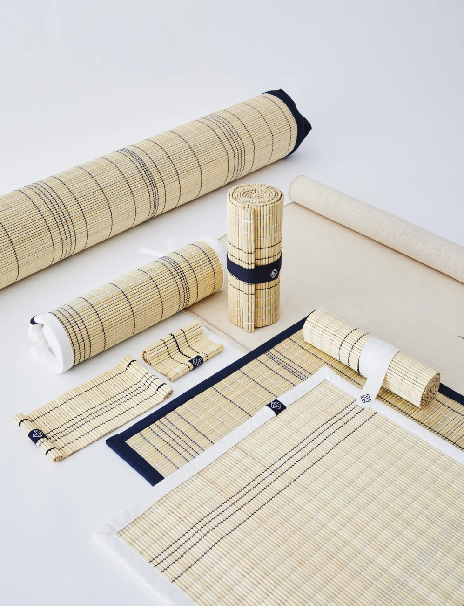
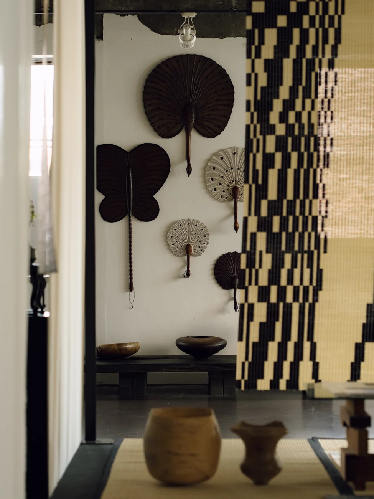
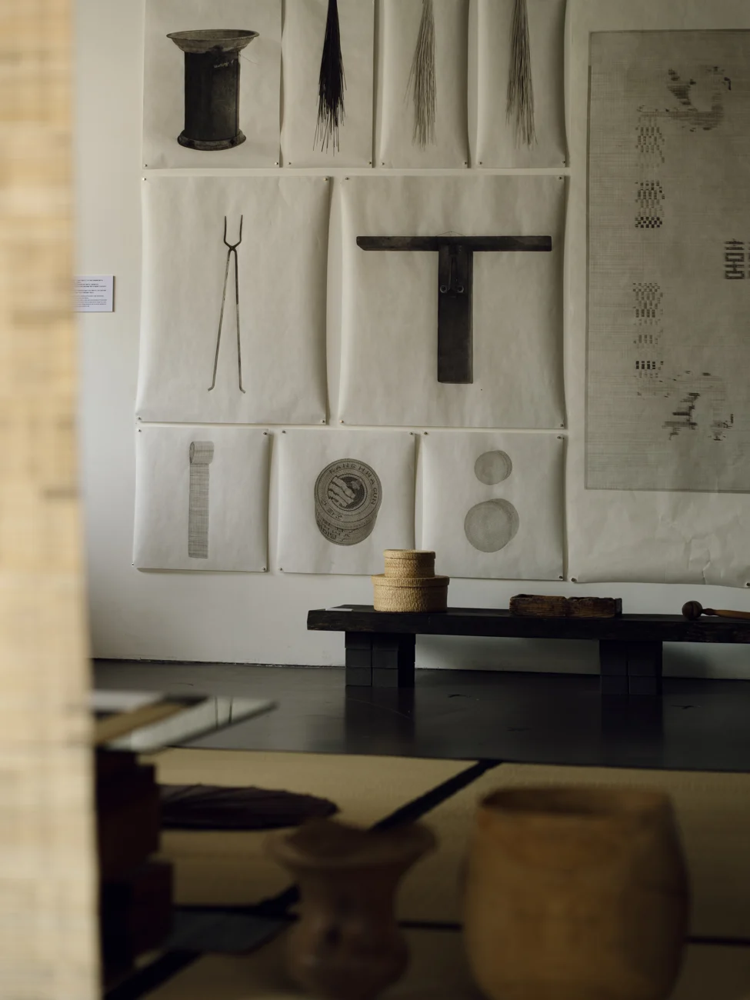
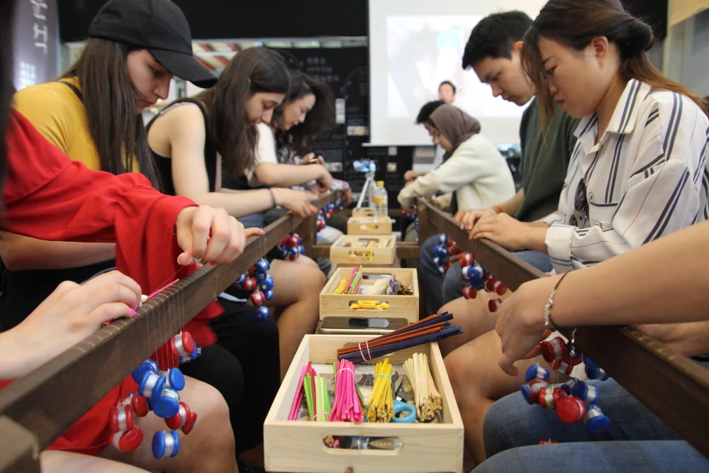

천년 역사 화문석 · 1981년부터 이어온 가업
60만 번의손길.
강화도령이
끝까지 이어갑니다.
강화에서 기르고, 두 세대가 이어온
HWAMUNSEOK01 / THE MAKING재배부터 제작까지
강화의 왕골.
두 세대의 기술.
우리가 이어갈 화문석.
왕골을 기르고,
전통을 이어갑니다.
一
강화에서 직접 기른 왕골.
1981년부터 두 세대가 이어온 기술.
전통 문양을 지키며
새로운 짜임과 쓰임을 연구합니다.

강화의 왕골 / THE MATERIAL
왕골 재배·가공제작·디자인 연구판매·공예 교육
02 / SELECTED WORKS화문석 전체 보기 ↗
아름다운 우리자리
전통 문양을 계승하고,
새로운 색과 짜임을 연구합니다.

작품 상세 보기 ↗문양 상세 / DETAIL

JARI COLLECTION ↗03 / EXHIBITIONS & PROJECTS전시·협업·연구
전통을 이어,
새로운 작품으로.
전통의 제작 기술에
동시대의 디자인을 더합니다.


밀라노 한국공예전 선정에서
오늘의 디자인 협업까지.
화문석의 가능성을 넓혀갑니다.
04 / CRAFT EXPERIENCE함께 만드는 기업·단체 공예 워크숍
함께 엮는
우리의 시간.

단체 체험은 사전 예약으로 운영합니다.
개인·가족 상시 현장체험은 운영하지 않습니다.
비수기 일요일 방문은 사전 문의 바랍니다.